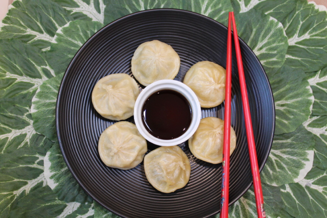

Bibigo Dumplings

Description
This recipe for Bibigo Dumplings brings out the most flavor from these Costco gems!
Ingredients
- 1 Frozen Bibigo dumpling package
- 1 oz Kikkoman Soy Sauce
Steps
- Rip corner of Bibigo dumpling package and place in microwave.
- Microwave package at 1100W for 1 minute.
- Let sit for 1 minute inside microwave to continue to steam.
- Throw out Bibigo soy sauce packet and get yo' Kikkoman sauce.
- Dip each delicious Bibigo favor nugget into Kikkoman sauce. Place entire nugget into mouth and repeat.